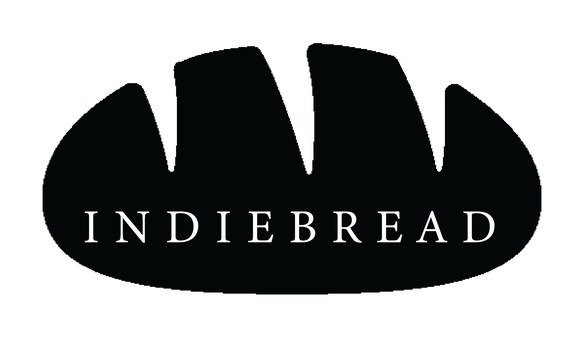
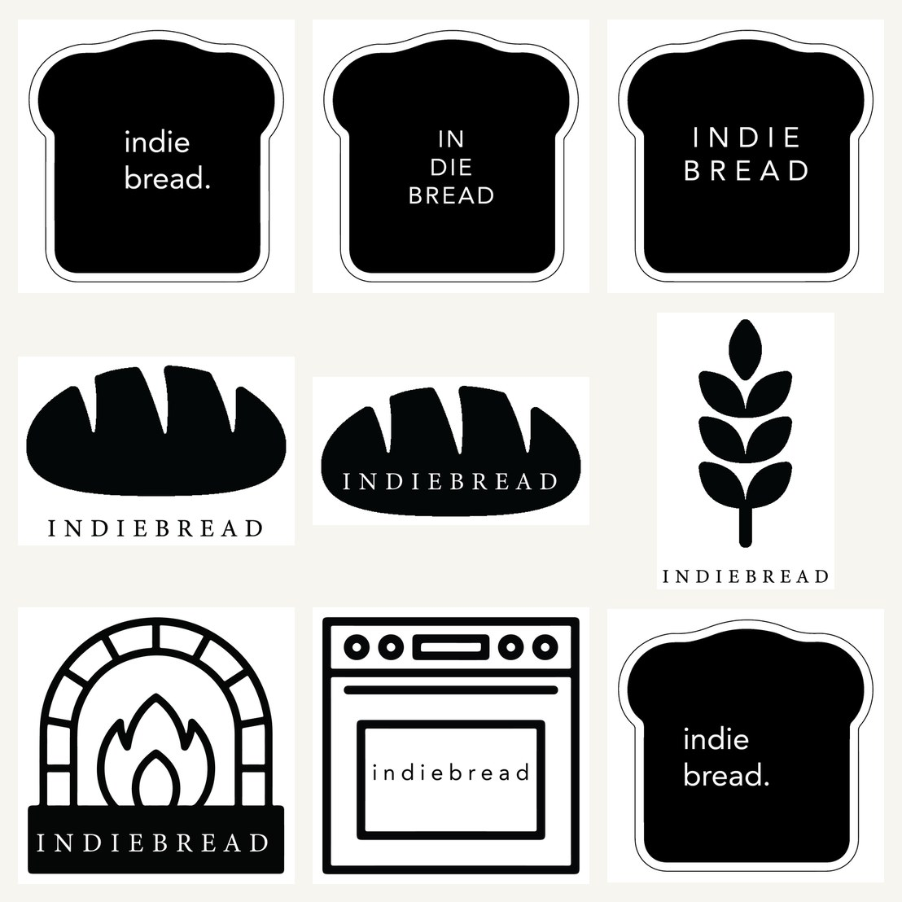
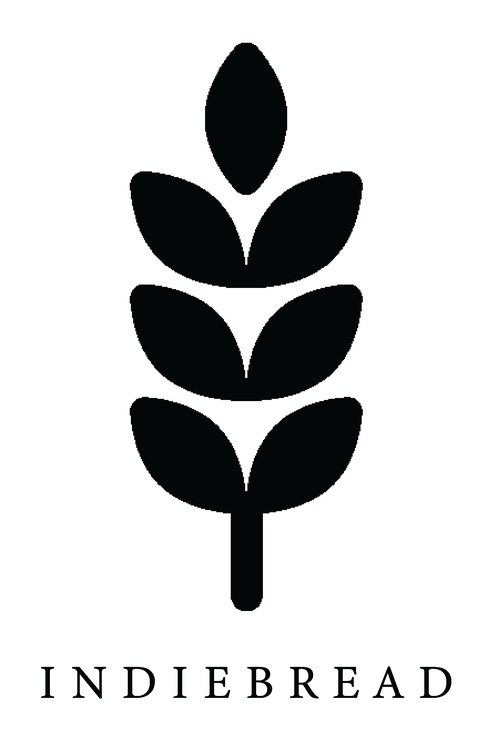

A logo identity for Indie Bread, an independent bakery. A monochrome exploration that took the honest symbols of bread — the slice, the loaf, the stone oven, the wheat — and worked each into a clean, stampable mark.

An independent bakery doesn't need a clever abstraction — it needs a mark that says "bread" instantly and prints cleanly on cheap brown paper. The exploration leans into that, taking the obvious icons and treating each as a serious candidate rather than a cliché to avoid.
Everything stays black on white, so whichever route wins can be stamped, embossed or screen-printed without losing a thing.


The slice, the loaf, the oven, the wheat.
One route badges the name inside a slice of bread; another draws a fat, friendly loaf with "INDIEBREAD" set across it; a third frames the bakery in a stone-oven arch; a fourth reduces everything to a single ear of wheat. Each is a complete logo, so the choice is about personality — homely, hearty, artisanal or agrarian — not about finishing an unfinished idea.
Holding the whole set to pure black and white isn't a style choice so much as a practical one: a bakery's logo lives on kraft bags, butcher paper, rubber stamps and loaf tags. A mark that survives all of those in one ink is worth more than a prettier one that doesn't.